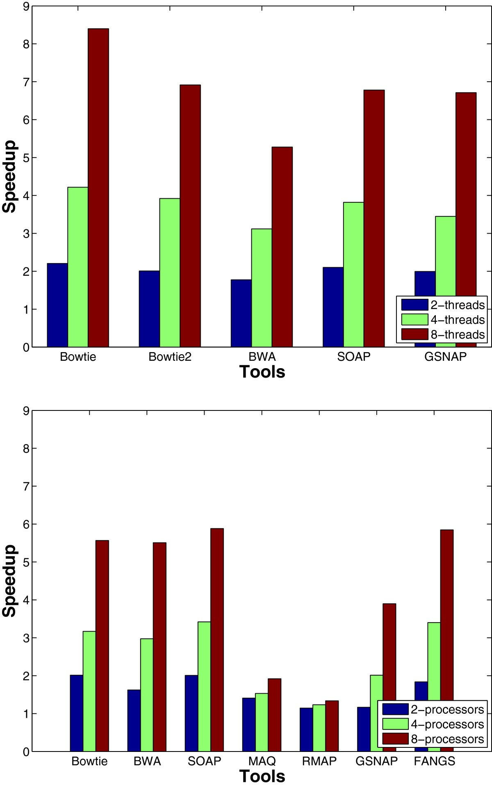
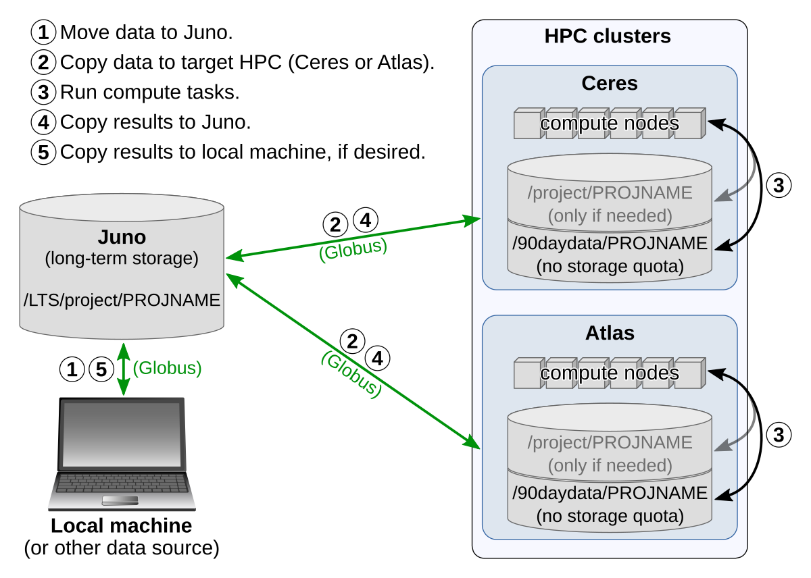

SRE Workshop Reference
Table of Contents
- Introduction to Atlas
- Exercise
- Commands Used in Workshop
- Printing Working Directory
- Change Directories
- Making Directories
- Listing Directory Contents
- Creating Files
- Removing Files and Directories
- View File Contents
- Modules
- Running Various Executable Files
- SLURM
- Creating an Alias
- Ownership, Permissions, and Groups
- Interacting with the Terminal
- Getting Help
- Python
Introduction to Atlas
High Performance Computing
High performance computing refers to the use of computing clusters to process large datasets and analyze complex problems. A computing cluster is a network of computers, often identically configured, and a node is a single computer in a cluster. A node has most of the same parts as a desktop or laptop computer. It has memory/RAM, storage, and a processor/CPU (or processors).
Use Cases
Remote Execution
In the screenshot below, the author of the tweet began some sort of analysis while at work, but the analysis didn’t complete before it was time to leave work and go home. While there are ways to keep a laptop from suspending with the lid closed, you still need to manage the laptop’s temperature, so you can’t just close it and leave it running in a backpack or bag.
Figure 1: An image of a laptop running Rstudio while buckled into a car seat
When I was a graduate student without access to HPC resources, I started an analysis of network traffic data on my laptop. It ran all day, and I also had to buckle my laptop in for the short drive home. The analysis ran all afternoon as well. Before I went to sleep, I disabled every option that would put my laptop to sleep, turned off all of its backlights, and went to sleep. The analysis was still running the next morning. In an attempt to cool itself, my laptop had kept its fans running all night, and one of the fans had broken in the process. If I’d had access to HPC resources, then I could have submitted my analysis to the cluster and let it run without having to worry about these kinds of issues.
Power
A node is usually more powerful than a standard desktop or laptop. The table below compares the author’s machine, a MacBook Pro purchased in late 2021, to an Atlas compute node.
| Specification | MacBook Pro | Atlas Compute Node |
|---|---|---|
| Processor Cores | 10 | 48 |
| Graphics Processing Cores | 16 | |
| Memory (gigabytes) | 16 | 384 |
| Storage (gigabytes) | 1000 | 2000 (local, plus access to a shared filesystem) |
There are many different things you can do with Atlas to create complex pipelines and workflows, but if you never do those and only ever submit one job at a time to a single node, you will likely benefit from the node’s increased speed and power.
The following image, taken from a comparison of bioinformatics tools1, compares two methods of parallelization. In the first comparison, the tools were instructed to run with multiple threads. In the second, a helper tool was used to partition the input data and start a new process of the analysis program for each partition of the data.

Figure 2: A Comparison of Bioinformatics Tools
On your personal machine, you may not have the resources to achieve speedups like this. If you devote all of your machine’s resources to an analysis, it might become unusably slow. If you try to process data that it too large to fit into your machine’s memory, you can cause your computer to become entirely unresponsive. By running your analysis on an Atlas node, you can usually avoid these issues.
Split-Apply-Combine
The multiprocessing example above runs on a single machine, but you can manually apply the same strategy to entire datasets. So long as your data can be split into independent chunks that require the same type of analysis, you can perform that split and analyze each chunk on a separate node. This kind of parallelism allows you to take full advantage of Atlas’s resources.
Message Passing Interface
For datasets that must be analyzed as a whole but are too large to fit into the memory of any Atlas nodes, you may be able to use software built with the Message Passing Interface (MPI). These programs can use multiple nodes as a pool of resources, distributing work across the entire set of nodes much like the helper tool in the multiprocessing example.
Nodes of Atlas
Atlas is a Cray CS500 Linux cluster. In total, it has
- 11,520 Intel Xeon Platinum 8260 (Cascade Lake) processor cores
- 101 terabytes of RAM
- 8 NVIDIA V100 GPUs
- Mellanox HDR100 Infiniband (100 Gb/s) interconnect
Atlas is composed of 244 nodes, all of which contain two 2.40GHz Xeon Platinum 8260 2nd Generation Scalable Processors with 24 cores each, for a total of 48 cores per node. Only the login and data transfer nodes can be accessed from outside the Mississippi State University HPC2 network.
| Node Type | Number of Nodes | RAM (GB) | GPUs |
|---|---|---|---|
| Login | 2 | 384 | |
| Data transfer | 2 | 192 | |
| Compute | 228 | 384 | |
| Compute (big memory) | 8 | 1536 | |
| Compute (GPU) | 4 | 384 | 2 NVIDIA V100 |
SCINet Accounts
Multifactor Authentication
Logging into Atlas requires multifactor authentication. Each time you log into Atlas, you will first need to provide a verification code generated by a multifactor authentication app. These codes expire after a certain amount of time, meaning that you must have consistent access to your device in order to log into Atlas. The multifactor authentication documentation recommends installing the Google Authenticator application on your Android or Apple device, but you can also use the Authy application on your computer.
Using the key or QR code provided in the email you received from the VRSC, follow along with the instructions for your device provided by the SCINet documentation.
Password Expiration
Passwords expire after 60 days. You can still log into Atlas with an expired password, but you will be prompted to change your password immediately.
Account Help
The VRSC manages SCINet accounts, not Mississippi State University. For help with your account or if you have forgotten your password, you can email the VRSC at scinet_vrsc@usda.gov
Logging in with SSH
ssh (Secure Shell) is a tool used to log into remote machines and execute
commands on those machines.
First Login
When you log into Atlas for the first time, you will use the temporary password that your received from the VRSC. Before you attempt to log in, make sure that you have that email ready and that you’ve set up either the Google Authenticator app on your smartphone or the Authy app on your desktop.
Logging In
The application that you use to log into Atlas varies between operating systems. On updated versions of Windows 10, you can use the Powershell application. For older versions of Windows, please refer to the SCINet documentation for using PuTTY. On macOS, you can use Terminal. On Linux, you can use the terminal application that your distribution comes with or install one with your package manager.
To log into Atlas, open the application appropriate for your operating system. On Windows, you can click the “Start” button and type “Powershell”. You should see Powershell in the results. On macOS, you can use the Launchpad, or you can activate Spotlight (⌘ + Space by default) and type “Terminal” to find the application. On a Linux system, there is likely some sort of application menu or application search function; you should be able to find a terminal application there.
Once you launch the application, you will likely see a black screen with white text. You should be able to type commands into the app if you’ve focused it by clicking on it. Type the command below, then press the Enter key.
ssh user.name@atlas-login.hpc.msstate.edu
You should see this notice.
********** N O T I C E **********
This system is under the control of and/or the property of Mississippi State
University (MSU). It is for authorized use only. By using this system, all
users acknowledge notice of and agree to comply with all MSU and High
Performance Computing Collaboratory (HPC2) policies governing use of
information systems.
Any use of this system and all files on this system may be intercepted,
monitored, recorded, copied, audited, inspected, and disclosed to authorized
university and law enforcement personnel, as well as authorized individuals of
other organizations. By using this system, the user consents to such
interception, monitoring, recording, copying, auditing, inspection and
disclosure at the discretion of authorized university personnel.
Unauthorized, improper or negligent use of this system may result in
administrative disciplinary action, up to and including termination, civil
charges, criminal penalties, and/or other sanctions as determined by applicable
law, MSU policies, HPC2 policies, law enforcement or other authorized State
and Federal agencies.
********** N O T I C E **********
Below the notice, you will see a request for your verification code. When you type your code into this prompt, you won’t see the characters appearing in the terminal.
(user.name@atlas-login.hpc.msstate.edu) Verification code:
Enter the 6-digit code from the Google Authenticator app or the Authy app. If the code is about to expire, wait until a new one is generated and use the new code. After entering the code, you will receive a prompt for your password. Just like when typing the verification code, you won’t see the characters appearing in the terminal.
(user.name@atlas-login.hpc.msstate.edu) Password:
If this is your first time logging in, you will be asked to provide your temporary password again, then you will be asked to create a new password and verify it. The characters do not appear in the terminal as you type them.
If you’ve done everything correctly, you will be logged into Atlas, and you’ll see another notice.
NOTICE:
Atlas is a cluster system running CentOS 7.8 configured as follows.
240 nodes, 480 processors, 11,520 processor cores
Node configuration:
48 cores (2X Xeon 8260 2.4 GHz [3.9 GHz turbo] 24 core processors)
384 GB RAM (12x 32GB DDR4-2933 2R RDIM)
1x Intel S4510 240GB SSD
1x Intel P4510 2TB U.2 NVMe SSD
1x Mellanox HDR100
BigMem Nodes:
1.5TB RAM
GPU Nodes:
2 Tesla V100 GPU; 384GB RAM
Below this notice, you will find the Atlas prompt.
[user.name@Atlas-login-2 ~]$
Addresses
- Login Node
ssh user.name@Atlas-login.hpc.msstate.edu- Data Transfer Node
ssh user.name@Atlas-dtn.hpc.msstate.edu
Data Management
Locations and Quotas
Users on Atlas can store their files in a few different locations. Some of these locations are subject to quotas, restricting the amount of data that can be stored by a user in these locations. Other locations are not subject to a quota, but the data is deleted 90 days after its last access. Some locations are backed up and suitable for long term storage of important data.
| Location | Quota | Backed Up | Deleted After 90 Days | Description |
|---|---|---|---|---|
| Juno | no | yes | no | large, multi-petabyte ARS storage device |
| 90daydata/PROJNAME | no | no | yes | short-term storage for code, data, and intermediate results of computational jobs |
| project/PROJNAME | yes | no | no | same purpose 90daydata/PROJNAME, but only granted if needed (users should use Juno for long-term storage instead) |
| /home/user.name | 5GB | yes | no | used to store configuration and login files |
Transferring Data

Figure 3: Data management workflow on SCINet
To get data onto Atlas, raw data from your local machine or some other source should first be transferred to your project space on Juno. Once the data is safely stored on Juno, you can transfer the data from Juno or your local machine to your project’s storage space in 90daydata to run your analysis. When your analysis is complete, you can transfer any results you need to save back to Juno and your local machine, if needed.
Globus is the recommended method for transferring data between SCINet systems. It provides a web interface that allows you to select a source and a destination and move data between them. SCINet provides a detailed guide to using Globus. In addition to using Globus to move data between SCINet systems, you can install Globus Connect Personal, which allows you to transfer files between your local desktop or laptop and SCINet systems. Being able to access your machine via Globus can be helpful if you have raw data on your machine that you need to work with on Atlas or if the results of your analysis are most easily viewed on your local machine (visualizations, for example).
- Atlas Globus Endpoint
msuhpc2#Atlas-dtn- Ceres Globus Endpoint
Ceres DTN- MSU HPCC Endpoint
msuhpc2#Transfer
You can also use scp (secure copy) to transfer files, usually small files or a
single file. Using scp requires the same kind of authentication that logging
into Atlas requires, and the commands look similar to the login commands. The
SCINet guide to transferring data with scp lists these commands and some
potential issues.
Software on Atlas
Environment Modules
LMOD, an environment module system, is used to manage which software installed
on Atlas is accessible to you. By using the various module commands, you can add
and remove software from your shell environment. Environment modules allow you
to easily select which version of software you want to use from among multiple
installed versions of the software. So long as a version remains installed, you
can always use an older version by specifying the version when you load the
software. The list below explains common module commands.
module list- Lists currently loaded modules in your environment
module avail- Lists modules that you can load
module spider- List all modules, including those that require you to load some prerequisite module
module load [module]- Loads a module into your environment
module unload [module]- Removes a module from your environment
module swap [module] [module]- Replaces the first provided module with the second
module help [module]- Provides information about the module
In addition to the module commands, there is a shorter form using ml. Any
command of the form module command can be replaced with ml command, but there
are a few shortcuts provided by ml.
module command |
ml command |
|---|---|
module list |
ml |
module load module_name |
ml module_name |
module unload module_name |
ml -module_name |
The ml commands for loading and unloading software can be combined. For example,
you can use ml module1 -module2 to load module1 and unload module2, rather than
using ml load and ml unload.
Containers
Some software on Atlas is available via containers, which are packages of
software that contain all of the code and dependencies necessary for the
contained application to run in any environment. Software installed as a
container can be seen in the list provided by ml spider. To see software
installed as a container with ml avail, run ml singularity before running ml
avail.
In addition to the containers installed on Atlas, there are repositories, such as biocontainers, that provide pre-built containers for commonly used software in a field. Downloading these containers can be simpler than downloading software and its dependencies and compiling it from source, since you may run into permission or compatibility issues that containers avoid.
Jobs on Atlas
Requesting Resources and Running Jobs
Atlas uses the Slurm Workload Manager as a scheduler and resource manager. Users either request resources and run interactive tasks or submit jobs to the queue. Both actions are done from one of the login nodes. When specifying the resources needed, users must specify the name of an account associated with their project. The following command will show you which accounts you may use.
sacctmgr show associations where user=$USER format=account%20,qos%50
Users likely want to specify other options as well, such as the amount of RAM or
the number of CPUs. If you don’t specify, then your job runs with default
parameters: 1 node using 1 core. To request resources for an interactive job,
use the salloc command to request resources and then use those resources with
srun. Resources for a non-interactive job submitted to the queue can be
requested during the submission, either as part of the sbatch command or in the
submitted script.
Job Arrays
Job arrays are a mechanism for managing a set of jobs that have identical resource requirements. For example, imagine that you have the following data.
| Sample | File |
|---|---|
| Sample One | sample1.fastq |
| Sample Two | sample2.fastq |
| Sample Three | sample3.fastq |
In this case, you want to perform some task--for example, quality checking--on
each sample independently. You could write three separate scripts that are
exactly the same, except for which sample is being checked, or you could use a
job array. When you submit a job to the queue, you can use --array and a range
of numbers to specify that, for every job in the job array, the same resources
should be requested and the same tasks executed. In this case, we could specify
--array 0-2. Then, rather than specifying the name of the file to be checked by
our quality assurance task, we can specify that the file checked should be the
the nth item from the beginning of our list of data, where n is the job array
number. sample1.fastq is the zeroth item from the beginning; sample2.fastq is
the first item from the beginning; sample3.fastq is the second item from the
beginning.
Example
Overview
- adapted from the COMBINE lab’s tutorial2
- download data
- use
srunto run one step of an analysis - use
sbatchto submit a job array to run the second step of the analysis several times on different data
Download Data
mkdir /home/user.name/training
cd /home/user.name/training/
curl ftp://ftp.ensemblgenomes.org/pub/plants/release-28/fasta/arabidopsis_thaliana/cdna/Arabidopsis_thaliana.TAIR10.28.cdna.all.fa.gz -o athal.fa.gz
chmod +x download_data.sh
./download_data.sh
- make directory
/home/user.name/training/ - change directory to
/home/user.name/training/ - download the a reference file from a URL and save it as
athal.fa.gz - make sure the
download_data.shscript is executable - run the download script (provided below)
cd /home/user.name/training/
for i in `seq 25 40`; do
mkdir -p data/DRR0161${i};
wget -P data/DRR0161${i} ftp://ftp.sra.ebi.ac.uk/vol1/fastq/DRR016/DRR0161${i}/DRR0161${i}_1.fastq.gz;
wget -P data/DRR0161${i} ftp://ftp.sra.ebi.ac.uk/vol1/fastq/DRR016/DRR0161${i}/DRR0161${i}_2.fastq.gz;
done
- change directory to
/home/user.name/training/ - for all numbers i from 25 to 40
- make a directory
data/DRR0161+ i - download two files to that directory, replace i with the appropriate number from 25 to 40 to build the URL
- make a directory
Indexing Transcriptome
salloc -A sandbox
salloc: Granted job allocation 292472
salloc: Waiting for resource configuration
salloc: Nodes Atlas-0042 are ready for job
- request default allocation using scinet account
- nodes: 1 node
- number of tasks: 1 core
#!/usr/bin/env bash
cd /home/user.name/training/
hostname
ml singularity salmon/1.3.0--hf69c8f4_0
salmon index -t athal.fa.gz -i athal_index
- change to training directory
- print the hostname to show that the command is being run on compute node and not the login node
- load
singularitymodule andsalmonmodulesalmonmodule is accessible as a container, sosingularityhas to be loaded first
- run
salmoncommand
srun /home/user.name/training/index.sh
Atlas-0042.HPC.MsState.Edu
WARNING: Skipping mount /apps/singularity-3/singularity-3.7.1/var/singularity/mnt/session/etc/resolv.conf [files]: /etc/resolv.conf doesn't exist in container
index ["athal_index"] did not previously exist . . . creating it
...
Running Salmon as a Job Array
#!/usr/bin/env bash
#SBATCH --account sandbox # set correct account
#SBATCH --nodes=1 # request one node
#SBATCH --cpus-per-task=8 # ask for 8 CPUs
#SBATCH --time=0-00:30:00 # set job time to 30 minutes.
#SBATCH --array=0-15 # run 16 jobs of this script
#SBATCH --output=%x.%A_%a.log # store output as jobname.jobid_arrayid.log
#SBATCH --error=%x.%A_%a.err # store output as jobname.jobid_arrayid.err
#SBATCH --job-name="salmon_run" # job name that will be shown in the queue
declare -A rna_files
rna_files['DRR016125']='data/DRR016125/DRR016125_1.fastq.gz data/DRR016125/DRR016125_2.fastq.gz'
rna_files['DRR016126']='data/DRR016126/DRR016126_1.fastq.gz data/DRR016126/DRR016126_2.fastq.gz'
rna_files['DRR016127']='data/DRR016127/DRR016127_1.fastq.gz data/DRR016127/DRR016127_2.fastq.gz'
rna_files['DRR016128']='data/DRR016128/DRR016128_1.fastq.gz data/DRR016128/DRR016128_2.fastq.gz'
rna_files['DRR016129']='data/DRR016129/DRR016129_1.fastq.gz data/DRR016129/DRR016129_2.fastq.gz'
rna_files['DRR016130']='data/DRR016130/DRR016130_1.fastq.gz data/DRR016130/DRR016130_2.fastq.gz'
rna_files['DRR016131']='data/DRR016131/DRR016131_1.fastq.gz data/DRR016131/DRR016131_2.fastq.gz'
rna_files['DRR016132']='data/DRR016132/DRR016132_1.fastq.gz data/DRR016132/DRR016132_2.fastq.gz'
rna_files['DRR016133']='data/DRR016133/DRR016133_1.fastq.gz data/DRR016133/DRR016133_2.fastq.gz'
rna_files['DRR016134']='data/DRR016134/DRR016134_1.fastq.gz data/DRR016134/DRR016134_2.fastq.gz'
rna_files['DRR016135']='data/DRR016135/DRR016135_1.fastq.gz data/DRR016135/DRR016135_2.fastq.gz'
rna_files['DRR016136']='data/DRR016136/DRR016136_1.fastq.gz data/DRR016136/DRR016136_2.fastq.gz'
rna_files['DRR016137']='data/DRR016137/DRR016137_1.fastq.gz data/DRR016137/DRR016137_2.fastq.gz'
rna_files['DRR016138']='data/DRR016138/DRR016138_1.fastq.gz data/DRR016138/DRR016138_2.fastq.gz'
rna_files['DRR016139']='data/DRR016139/DRR016139_1.fastq.gz data/DRR016139/DRR016139_2.fastq.gz'
rna_files['DRR016140']='data/DRR016140/DRR016140_1.fastq.gz data/DRR016140/DRR016140_2.fastq.gz'
declare -a samples=( 'DRR016125' 'DRR016126' 'DRR016127' 'DRR016128' 'DRR016129' 'DRR016130' 'DRR016131' 'DRR016132' 'DRR016133' 'DRR016134' 'DRR016135' 'DRR016136' 'DRR016137' 'DRR016138' 'DRR016139' 'DRR016140' )
cd /home/user.name/training/
ml singularity salmon/1.3.0--hf69c8f4_0
SAMPLE=${samples[$SLURM_ARRAY_TASK_ID]}
read -a FILES <<< ${rna_files[$SAMPLE]}
salmon quant -i athal_index -l A \
-1 ${FILES[0]} \
-2 ${FILES[1]} \
-p $SLURM_CPUS_PER_TASK --validateMappings \
-o quants/$SAMPLE
- SBATCH directives
- set up RNA files
- set up sample names
- change to the correct directory
- load
singularityandsalmon - get sample from
$SLURM_ARRAY_TASK_ID - get reads from
$rna_files - run
salmon
sbatch salmon-run.sh
Submitted batch job 292484
squeue --me
JOBID PARTITION NAME USER ST TIME NODES NODELIST(REASON)
292484_0 atlas salmon_r user.nam R 0:03 1 Atlas-0047
292484_1 atlas salmon_r user.nam R 0:03 1 Atlas-0051
292484_2 atlas salmon_r user.nam R 0:03 1 Atlas-0060
292484_3 atlas salmon_r user.nam R 0:03 1 Atlas-0067
292484_4 atlas salmon_r user.nam R 0:03 1 Atlas-0074
292484_5 atlas salmon_r user.nam R 0:03 1 Atlas-0076
292484_6 atlas salmon_r user.nam R 0:03 1 Atlas-0079
292484_7 atlas salmon_r user.nam R 0:03 1 Atlas-0083
292484_8 atlas salmon_r user.nam R 0:03 1 Atlas-0131
292484_9 atlas salmon_r user.nam R 0:03 1 Atlas-0136
292484_10 atlas salmon_r user.nam R 0:03 1 Atlas-0144
292484_11 atlas salmon_r user.nam R 0:03 1 Atlas-0146
292484_12 atlas salmon_r user.nam R 0:03 1 Atlas-0149
292484_13 atlas salmon_r user.nam R 0:03 1 Atlas-0152
292484_14 atlas salmon_r user.nam R 0:03 1 Atlas-0156
292484_15 atlas salmon_r user.nam R 0:03 1 Atlas-0158
Getting Help
If you’re running into issues using Atlas, then you can find answers to your questions in several different places.
If you’re having issues related to Atlas itself or software installed on Atlas, then you can email HPC2 at Mississippi State University (help-usda@hpc.msstate.edu).
If your issues are related to your SCINet account, to a project, or to a storage quota, you can email SCINet Virtual Research Support Core (scinet_vrsc@usda.gov).
If you aren’t sure who might be able to answer your question or if you have questions about this document, you can email the author of this document, Adam Thrash (thrash@igbb.msstate.edu).
Documentation
The SCINet Quick Start contains more detailed guides on specific parts of the high-performance computing experience available through SCINet. Some parts of the guide may be more specific to Ceres (mainly software version numbers), but most parts will be applicable to Atlas as well.
Additionally, the Atlas documentation covers topics specific to Atlas in detail, including Atlas Open OnDemand, a web interface for the Atlas cluster.
Exercise
Logging In
ssh user.name-login.hpc.msstate.edu
********** N O T I C E **********
This system is under the control of and/or the property of Mississippi State
University (MSU). It is for authorized use only. By using this system, all
users acknowledge notice of and agree to comply with all MSU and High
Performance Computing Collaboratory (HPC2) policies governing use of
information systems.
Any use of this system and all files on this system may be intercepted,
monitored, recorded, copied, audited, inspected, and disclosed to authorized
university and law enforcement personnel, as well as authorized individuals of
other organizations. By using this system, the user consents to such
interception, monitoring, recording, copying, auditing, inspection and
disclosure at the discretion of authorized university personnel.
Unauthorized, improper or negligent use of this system may result in
administrative disciplinary action, up to and including termination, civil
charges, criminal penalties, and/or other sanctions as determined by applicable
law, MSU policies, HPC2 policies, law enforcement or other authorized State
and Federal agencies.
********** N O T I C E **********
(user.name@atlas-login.hpc.msstate.edu) Verification code:
(user.name@atlas-login.hpc.msstate.edu) Password:
Directories
Show Current Directory
pwd prints the current working directory. It’s useful for figuring out where you
are.
pwd
/home/user.name
Changing Directories
In this example, the working directory is the user’s home folder.
pwd
/home/user.name
Using cd, you can change to a different directory. cd doesn’t produce any output
to confirm that you changed directories.
cd /90daydata/shared/
pwd
/90daydata/shared/
Creating Directories
Use mkdir to create new directories. By default, mkdir will produces errors if
you try to create nested directories when the full path doesn’t exist or if you
try to create an already existing directory.
mkdir exercise/test
mkdir: cannot create directory ‘exercise/test’: No such file or directory
mkdir exercise
mkdir exercise
mkdir: cannot create directory ‘exercise’: File exists
However, mkdir -p will handle both of these issues.
# -p - no error if existing, make parent directories as needed
mkdir -p exercise
Listing Directory Contents
By default, ls shows the contents of the current working directory in a grid.
ls
exercise
Use ls -lh (or ls -l -h) to show them in a tabular format (-l) with
human-readable size-information (-h).
ls -lh
total 44K
drwxr-x--- 2 user.name user.name 10 Sep 20 2022 Desktop
drwx------ 3 user.name user.name 49 Feb 22 08:48 Downloads
drwxrwx--- 2 user.name user.name 10 May 24 10:43 exercise
Use a to show all files, including hidden files.
ls -lha
total 220K
drwxr-xr-x 23 user.name user.name 4.0K May 24 10:43 .
drwxr-xr-x 2070 root root 72K May 19 18:02 ..
-rw-r----- 1 user.name user.name 2.4K Mar 9 11:19 .bashrc
drwxrwx--- 2 user.name user.name 10 May 24 10:43 exercise
Provide a path to show the contents of that directory instead of the contents of the current directory.
ls -lha exercise/
total 0
drwxrwx--- 3 user.name user.name 24 May 24 13:02 test
Remove Directories
You can use rm to remove files or directories. By default, rm will not remove
directories. Files and directories removed with rm are gone, so be very careful
when you use rm to remove something, as you cannot recover it.
rm exercise
rm: cannot remove ‘exercise/’: Is a directory
rm -d will remove empty directories.
# -d, --dir - remove empty directories
rm -d exercise
rm -r will remove directories and their contents.
mkdir -p exercise/
# -r, -R, --recursive - remove directories and their contents recursively
rm -r exercise
Creating Files
On Your Computer
You can use programming text editors such as Sublime Text or VS Code to create scripts on your computer. Once you’ve created a script, you can use Globus Personal Connect to upload your script via the Globus web interface.
#!/usr/bin/env bash
echo "Hello, world!"
You can also use scp.
scp hello.sh user.name@atlas-login.hpc.msstate.edu:/home/user.name/hello.sh
Creating a File on Atlas
nano to create a file. Once you've written the contents of the file, you can press Ctrl + x to quit/write from nano.
nano hello.sh
Copy and paste the contents of this file into nano.
#!/usr/bin/env bash
echo "Hello, world!"
Scripting
Running Scripts
You can execute a script by calling the interpreter with the script name as an argument.
bash hello.sh
If the script is executable, you can call it using its path.
./hello.sh
/home/user.name/hello.sh
Shebang
The shebang specifies what interpreter the machine should use to execute a
script. While the full path to an interpreter can be provided, as seen in the
first example, using #!/usr/bin/env interpreter_name, where interpreter_name is
the name of an interpreter as seen in the other examples, is a better practice.
#!/bin/bash
#!/usr/bin/env bash
#!/usr/bin/env python3
#!/usr/bin/env Rscript
Variables
In Bash scripts, variables are created by specifying a variable name, followed
by an equals sign, followed by the value of the variable. For example, the
following example prints, “Hello, world”, replacing the $NAME variable with its
value when it executes. (echo is a command that prints text to your screen.)
#!/usr/bin/env bash
NAME="world"
echo "Hello, $NAME"
Hello, world
$1, $2, $3, etc can be used in scripts to access command-line arguments.
echo "Hello, $1"
./hello.sh "world"
Hello, world
Jobs
Resource Allocation
- -N
- number of nodes needed
- --mem
- amount of RAM needed per node
- -n
- number of cores needed per node
- --time
- amount of time needed per node
- --account
- the account associated with the job
Running Interactively
An account is required to request resources, though other arguments can be added to the request.
salloc -A sandbox <any other arguments>
salloc: Granted job allocation 292472
salloc: Waiting for resource configuration
salloc: Nodes Atlas-0042 are ready for job
Using the hostname command to see the name of the machine on which the command
was executed, you can confirm that srun is running on the node allocated above.
hostname # should display the login node
srun hostname # should display a compute node
Atlas-login-1.HPC.MsState.Edu
Atlas-0042.HPC.MsState.Edu
Submitting to the Queue
#SBATCH directives allow you to specify what kind of resources you need in the
script you submit to the queue instead of specifying them on the command line.
#!/usr/bin/env bash
#SBATCH --account=sandbox # set correct account
#SBATCH --nodes=1 # request one node
#SBATCH --cpus-per-task=8 # ask for 8 CPUs
#SBATCH --time=0-00:30:00 # set job time to 30 minutes.
#SBATCH --output=%x.%A.log # store output as jobname.jobid.log
#SBATCH --error=%x.%A.err # store output as jobname.jobid.err
#SBATCH --job-name="demo" # job name that will be shown in the queue
hostname
sbatch hostname.sh
Submitted batch job 292484
cat can be used to print the contents of files. In this case, printing the
output log shows the output of the script, which should be the hostname of the
node on which the script ran.
cat exercise_4.292484.log
Atlas-0040.HPC.MsState.Edu
Test Your Knowledge
Goal
The goal of this exercise is to put everything in the above examples together together in order to run an executable on an Atlas node. The executable’s path will be provided below. The executable will fail to run
- if it is run anywhere but an Atlas node
- if you don’t have permission to write to the executable’s location
Instructions
- log in
- make a directory somewhere like
/home/user.name/exercise - copy the executable using the
cpcommandcp /home/user.name/SRE/exercise/atlas_exercise /home/user.name/exercise
- create a script that runs the executable
- with full path
/home/user.name/exercise/atlas_exercise- with relative path from
/home/user.name/exercisedirectory ./atlas_exercise
- submit the script to Atlas with
sbatchor usesallocandsrun - check for the file
exercise.txtin the directory you created with the contents below- You have successfully run the executable on an Atlas node!
Solution
ssh user.name@atlas-login.hpc.msstate.edu
mkdir -p $HOME/exercise/
cp /home/user.name/SRE/exercise/atlas_exercise $HOME/exercise
cd $HOME/exercise/
chmod +x atlas_exercise
sbatch exercise.sh
#!/usr/bin/env bash
#SBATCH --account sandbox # set correct account
#SBATCH --output=%x.%A.log # store output as jobname.jobid.log
#SBATCH --error=%x.%A.err # store output as jobname.jobid.err
#SBATCH --job-name="exercise" # job name that will be shown in the queue
./atlas_exercise
ls -lh
total 5.5M
drwxrwx--- 2 user.name user.name 149 Jun 6 10:23 .
drwxr-xr-x 23 user.name user.name 4.0K Jun 6 10:21 ..
-r-xr-x--- 1 user.name user.name 5.5M Jun 6 10:22 atlas_exercise
-rw-rw---- 1 user.name user.name 0 Jun 6 10:23 exercise.12212806.err
-rw-rw---- 1 user.name user.name 0 Jun 6 10:23 exercise.12212806.log
-rw-rw---- 1 user.name user.name 291 Jun 6 10:22 exercise.sh
-rw-rw---- 1 user.name user.name 59 Jun 6 10:23 exercise.txt
cat exercise.txt
You have successfully run the executable on an Atlas node!
Commands Used in Workshop
The following commands were run during the afternoon session of the Introduction to Atlas workshop. Some of this information is duplicated above, and some of these commands may not be commands you find useful.
Printing Working Directory
pwd
Change Directories
cd # returns you to your home directory
cd ../ # moves you up one level
cd /90daydata/
cd /90daydata/shared/
cd /90daydata/shared/user.name/
cd /90daydata/shared/user.name/exercise/
Making Directories
mkdir user.name # make a directory
mkdir -p user.name/exercise/ # make a directory, creating all directories needed and ignoring errors if a directory already exists
Listing Directory Contents
ls # the most basic option
ls user.name/ # view contents of user.name folder
ls -F # displays special characters at the end of a file to provide more information
ls -l # display output in long format
ls -lh # display output in long, human-readable format
ls -lhF # combines -lh with -F
ls -a # show hidden files
ls -lha | less -S # comines -lh and -a, pipes into less
ls -lh .bashrc # checks specific file (.bashrc, in this case)
ls -lh /project/ | grep past # check a specific directory, then search results for a specific folder
Creating Files
touch creates empty files.
touch exercise/test
touch test
nano opens the specified file in an editor in the terminal.
nano test.py
nano test.sh
nano test.sh
nano .bashrc
Removing Files and Directories
rm test # removes a file named test
rm -d exercise/ # removes an empty directory named exercise
rm -r exercise/ # removes a directory named exercise and all its contents
View File Contents
cat prints file contents to the console.
cat test.sh
less opens a special interface for viewing file contents, which you can exit by
pressing q. less -S prevents lines from wrapping and allows them to expand to
the right forever.
less -S .bashrc
Modules
ml avail shows which modules are available. ml python/3.9.2 loads version 3.9.2
of the python interpreter.
ml avail
ml python/3.9.2
Running Various Executable Files
./atlas_exercise # the program from the exercise
./test.sh # uses the interpreter specified in the file's shebang
./test.py # uses the interpreter specified in the file's shebang
./test.sh # uses the interpreter specified in the file's shebang
bash test.sh # uses bash
sh test.sh # uses sh
SLURM
This command from the Atlas documentation lists the accounts you can use to request resources.
sacctmgr show associations where user=$USER format=account%20,qos%50
salloc requests resources according to the parameters you provide.
salloc -A sandbox
squeue shows queued jobs. squeue --me shows your queued jobs.
squeue --me
srun runs the script on resources allocated to you.
srun test.sh
Creating an Alias
Ownership, Permissions, and Groups
chgrp changes the group of a file. This example changes the group of .bashrc to
scinet-users.
chgrp scinet-users .bashrc
chmod changes the permissions of a file. More information can be found here.
chmod g+rwx .bashrc # give read, write, and execute permissions to the group for .bashrc
chmod +x atlas_exercise # give execute permissions to user and group for atlas_exercise
chmod +x test.py # give execute permissions to user and group for test.py
chmod +x test.sh # give execute permissions to user and group for test.py
chmod +x test.sh # give execute permissions to user and group for test.py
groups can show to which groups a user belongs.
groups user.name
Interacting with the Terminal
clear removes all content from the screen, though you can possibly scroll up to
see it again, depending on your terminal.
clear
exit logs you out of your current shell. If you are logged in to Atlas, it will
log you out and return to your local shell.
exit
history shows commands that you have previously typed, assuming your shell is
configured to retain history. grep searches for the word provided. The “|”
character, called “pipe”, means that you are “piping” the command of history as
input to the grep command.
history | grep sacct
history | grep source
which shows what command is run when you type the command. Using which is an
easy way to make sure the program you want is available. For example, if you run
which python3 without first running ml python/3.9.2, you will receive an error.
which bash
which python
which python3
Though not demonstrated in the workshop, you could do something like the ls
example below. If you put this alias in your .bashrc file, you would be able to
type ls and get the output of ls -lh.
alias python=python3
alias ls="ls -lh"
Getting Help
man provides a manual for the requested program. Many programs also have a -h
option to print their help.
man ls
Python
ml python/3.9.2 loads version 3.9.2 of the python interpreter.
python # loads default python interpreter, which is python2
ml python/3.9.2
python3 # loads python3 interpreter
python3 test.py # runs test.py using python3 interpreter
Footnotes:
A. Hatem, D. Bozdağ, A. E. Toland, and Ü. V. Çatalyürek, “Benchmarking short sequence mapping tools,” BMC Bioinformatics, vol. 14, no. 1, p. 184, Jun. 2013, doi:10.1186/1471-2105-14-184.